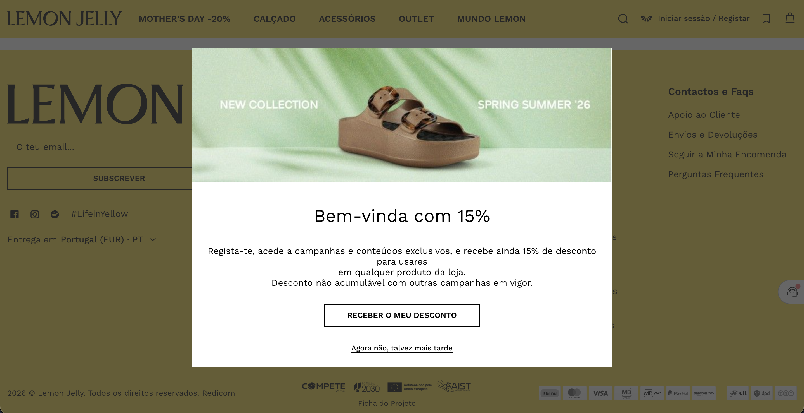
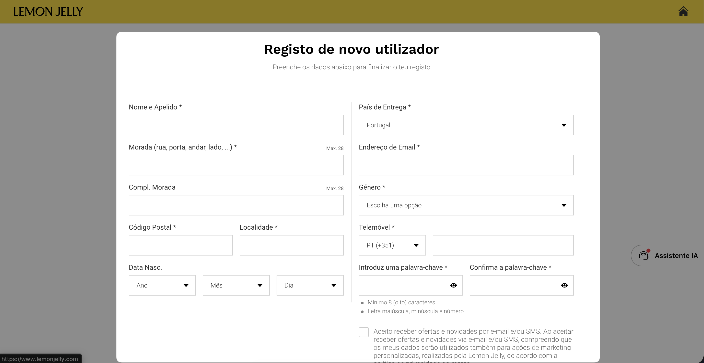

O pop-up prometeu 15%. O caminho até lá teve 11 campos.
Apareceu-nos um pop-up a prometer 15% de desconto. Clicámos e fomos parar a um “checkout” com 11 campos. Desistimos e acabámos por nos registar pelo footer (email, nome, data de nascimento e RGPD válida).

Pop-up de boas-vindas com promessa de 15% de desconto.

Formulário a que o pop-up leva: 11 campos antes de chegar ao desconto.
Como faríamos
O caminho mais visível para captar lead deve ser sempre o mais leve. Um pop-up de desconto pede 1 ou 2 campos, no máximo. O resto fica para depois.
Porquê
Captação não é checkout. Cada campo extra reduz a taxa de conversão. O dado que importa nesta fase é o email; tudo o resto pode ser pedido mais tarde, quando já há relação.